Dr Ardhendu Behera, Reader (Associate Professor) in Computer Vision and Artificial Intelligence
Department of Computer Science, Edge Hill University
News
October 2021: A paper has been accepted in BMVC 2021. Congratulation Zachary!
October 2021: Organizing first international workshop on Hazard Perception in Intelligent Vehicle HPIV@WACV 2022 ( Paper submission: 31st October 2021).
October 2021: Welcoming Jacob Crewe as an MRes student.
September 2021: Welcoming Aditya Humnabadkar as a PhD Student and Pratibha Sindhe as a Research Assistant to the group.
September 2021: Presented our paper (Driver Distraction Recognition-Driven Collision Avoidance Algorithm for Active Vehicle Safety) in 24th IEEE International Conference on Intelligent Transportation Systems (ITSC 2021).
It is in collaboration with The Automotive Controls Laboratory at
IIT Madras.
August 2021: Funding success from PhenomUK (DeepEarNet: Accurate Segmentation and Measurement of Cereal Grain Spikes Directly in Point Clouds Using Latest Deep Learning and Domain Knowledge) in collaboration with Aberystwyth University
July 2021: Start of the CRUK-PCUK-EPSRC project PANC-CYS-GAN: A Multimodal Longitudinal Generative Adversarial Network (GAN) to Discriminate High-risk Cysts for the Early Detection of Pancreatic Cancer.
June 2021: Happy to be outstanding reviewer for CVPR 2021.
May 2021: Our review paper (A review of computer vision based approaches for physical rehabilitation and assessment) is accepted in Multimedia Systems journal.
May 2021: Student opportunity funding (SOF) success to support reseach internships for Edge Hill University students.
April 2021: Start of the industrial project (Royal DSM) "AI approaches for enhanced process performance and product quality"
February 2021: Our paper Attend and Guide (AG-Net): A Keypoints-driven Attention-based Deep Network for Image Recognition, is accepted in IEEE Trans. on Image Processing.
Past News
Research Projects
List of publications can be found in Google Scholar.
Attention-Driven Hierarchical Representation
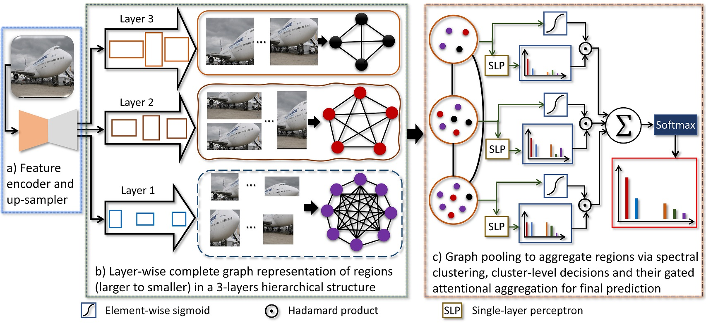 An Attention-driven Hierarchical Multi-scale Representation for Visual Recognition. Z. Wharton, A. Behera and A. Bera. The 32nd British Machine Vision Conference 2021 (BMVC 2021). Preprint| Project Webpage| Supplementary
Collision Avoidance
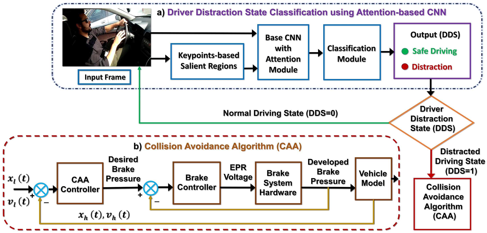 Driver Distraction Recognition-driven Collision Avoidance Algorithm for Active Vehicle Safety. K. B. Devika, A. Bera, V. R. S. Yellapantula, A. Behera, Y. Liu, and S. C. Subramanian. Accepted in 24th IEEE International Conference on Intelligent Transportation Systems (ITSC 2021). Preprint
Context-aware Attentional Pooling (CAP)
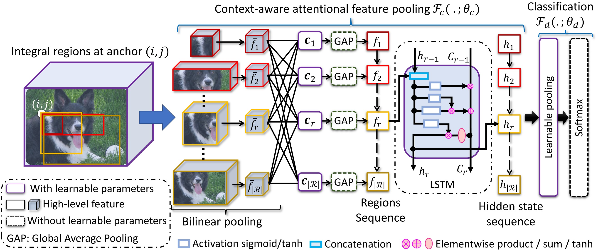 Context-aware Attentional Pooling (CAP) for Fine-grained Visual Classification. A. Behera, Z. Wharton, P. Hewage and A. Bera. The Thirty-Fifth AAAI Conference on Artificial Intelligence 2021 (AAAI 2021). Poster| Preprint| Project Webpage| Supplementary| Code
Attend and Guide (AG-Net)
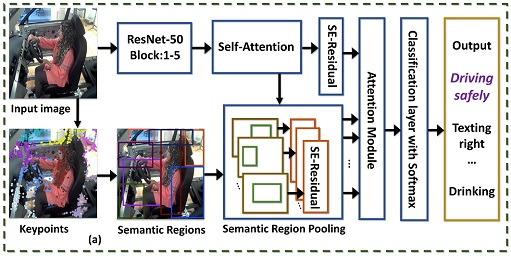 Attend and Guide (AG-Net): A Keypoints-driven Attention-based Deep Network for Image Recognition. A. Bera, Z. Wharton, Y. Liu, N. Bessis and A. Behera. IEEE Transactions on Image Processing, Vol 30, pp 3691-3704, 2021. Preprint| Project Webpage| Supplementary|
Coarse Temporal Attention Network (CTA-Net)
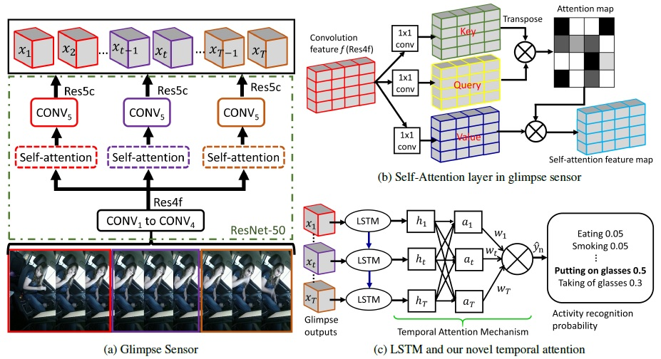 Coarse Temporal Attention Network (CTA-Net) for Driver's Activity Recognition. Z. Wharton, A. Behera, Y. Liu and N. Bessis. IEEE/CVF Winter Conference on Applications of Computer Vision (WACV) 2021. Preprint| Project Webpage
Attentional Learnable Pooling
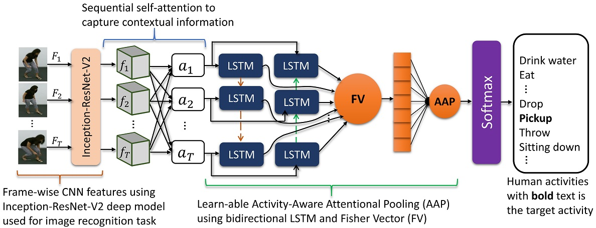 Attentional Learn-able Pooling for Human Activity Recognition. B. Debnath, M. O'Brien, S. Kumar and A. Behera. IEEE International Conference on Robotics and Automation (ICRA) 2021. Preprint| Project Webpage
Regional Attention Network (RAN)
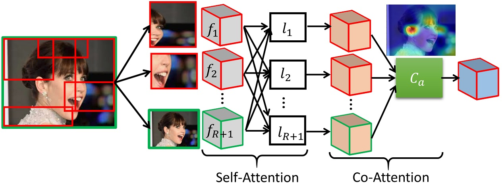 Regional Attention Network (RAN) for Head Pose and Fine-grained Gesture Recognition. A. Behera, Z. Wharton, Y. Liu, M. Ghahremani, S. Kumar and N. Bessis. IEEE Transaction on Affective Computing (Early Access), 2020. ArXiv Preprint| Project Webpage
Driver's Activity Monitoring
 Deep CNN, Body Pose and Body-Object
Interaction Features for Drivers' Activity Monitoring. A. Behera, Z. Wharton, A. Keidel and B. Debnath.
IEEE Transactions on Intelligent Transportation Systems (Early Access), 2020. Preprint|
Project Webpage
Deep CNN, Body Pose and Body-Object
Interaction Features for Drivers' Activity Monitoring. A. Behera, Z. Wharton, A. Keidel and B. Debnath.
IEEE Transactions on Intelligent Transportation Systems (Early Access), 2020. Preprint|
Project Webpage
Adversarial Domain Adaptation
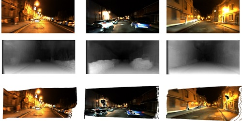 Unsupervised Monocular Depth Estimation for Night-time Images using Adversarial Domain Feature Adaptation. M. Vankadari, S. Garg, S. Kumar, A. Majumder and A. Behera. European Conference on Computer Vision (ECCV), Vol 12373, pp 443-459, 2020. ArXiv Preprint| Project Webpage
Point Cloud Analysis
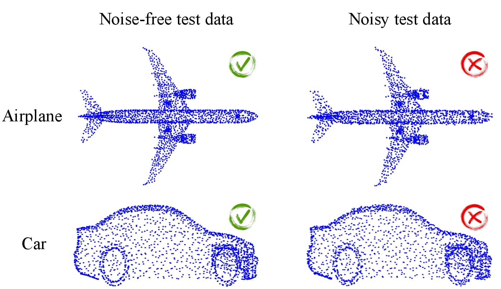Orderly Disorder in Point Cloud Domain. M. Ghahremani, B. Tiddeman, Y. Liu and A. Behera. European Conference on Computer Vision (ECCV), Vol 12373, pp 494-509, 2020. ArXiv Preprint| Code| Project Webpage
Head Pose Estimation
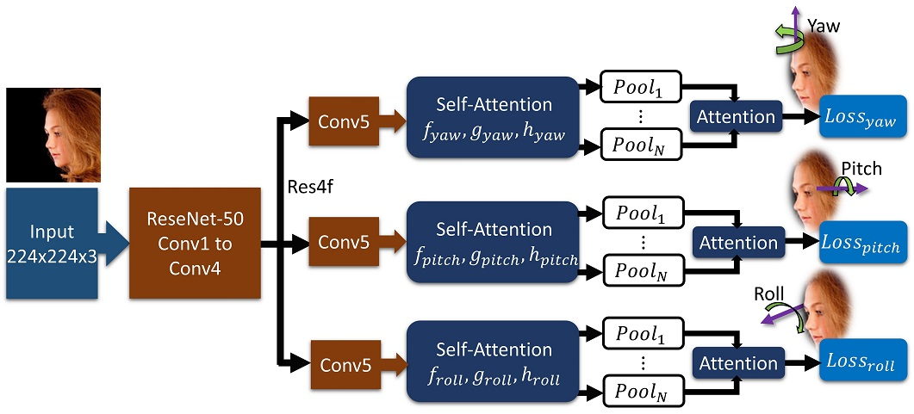Rotation Axis Focused Attention Network (RAFA-Net) for Estimating Head Pose. A. Behera, Z. Wharton, P. Hewage and S. Kumar. Asian Conference on Computer Vision (ACCV) 2020. Paper| Code| Project Webpage
Body Pose Encoding
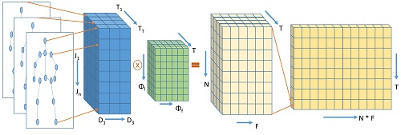Attention-driven Body Pose Encoding for Human Activity Recognition. B. Debnath, M. O'brien, S. Kumar and A. Behera. 25th International Conference on Pattern Recognition (ICPR) 2020. ArXiv Preprint| Project Webpage
Hand Over Face Emotion
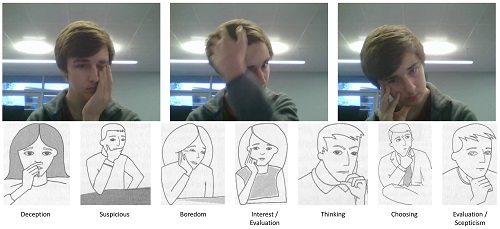Associating facial expressions and upper-body gestures with learning tasks for enhancing intelligent tutoring systems. A. Behera, P. Matthew, A. Keidel, P. Vangorp, H. Fang and S. Canning. International Journal of Artificial Intelligence in Education 2020. Open Access| Project Webpage
Compressive Sensing
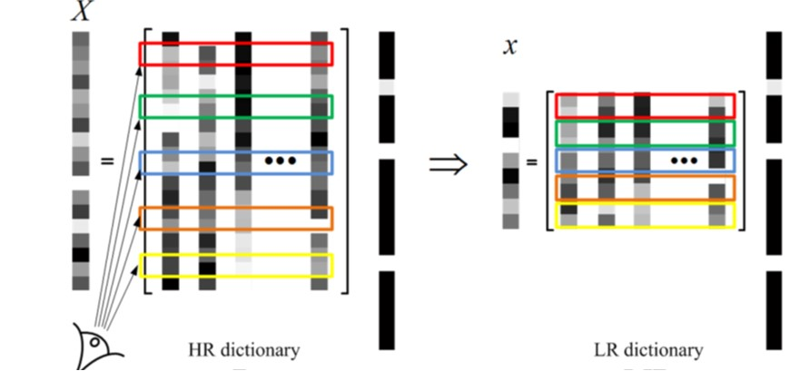Remote sensing image fusion via compressive sensing. M. Ghahremani, Y. Liu, P. Yuen and A. Behera. ISPRS journal of photogrammetry and remote sensing, Vol 152, pp. 34-48, 2019. Preprint| Project Webpage